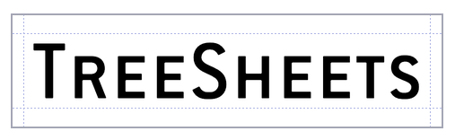

Tutorial & Feature description
There are 3 ways to learn how TreeSheets works:
1. Live In-App Tutorial:
Try out functionality live while reading about it, in the tutorial document that loads up when you first start the program (or press F1).
2. Watch this video:
William Ranvaud kindly made a tutorial video:
3. Or, read about it on this page:
[Note: The text / images below are a bit out of date, but should still give you the general idea.]
Start by creating a new grid (menu File/New, or CTRL+N). Don't worry too much about dimensions, inserting/deleting rows and columns is the easiest thing.

To enter data, simply LeftClick inside a cell to select it, and start typing:

Once you start typing on a selected cell, a thinner border will indicate that you are in text edit mode (similar to spreadsheets).
Select a grid line (LeftClick):

Now start typing to insert a row or column at that location. The new content will end up at between the cells you clicked at (the thicker part of the line selection):

Similarly, we can delete rows or columns by selecting a grid line again:

and then using the BACKSPACE key (for the row above, or the column before) or the DELETE key (for the row below, or the column after) to delete:

This intuititively works much like a text editor, try it out. Don't worry about accidental deletions, there's unlimited undo on any actions (Edit/Undo or CTRL+Z).
Saving (File/Save or CTRL+S, File/Save As) and Loading (File/Open or CTRL+O) work as you expect from any productivity application. TreeSheets automatically loads the last saved .cts file on startup. Use File/Export As XML / HTML / Text if you need to use your data outside of TreeSheets.
These are the basics of editing a single grid, but the real fun only starts when you start organizing your data with grids inside other grids. Simply select a single cell, and use Edit/New Grid or INSERT:
 ->
-> 
The cell you had selected now has a 1x1 subgrid. Edit this cell, and add some additional cells to this new grid to get the hang of how this new grid works in relation to its parent:

You can select multiple cells simply by using LeftClick+Drag, much like in spreadsheets. This even works across grid hierarchy levels, where crossing boundaries will automatically select the entire child:
 or
or 
Some operations work only on single cells (such as inserting new data above), but many also work on these larger selections. For example, you can use DELETE to clear/remove any sub selection of a grid, and CTRL+LEFT|RIGHT|UP|DOWN to move a selection around inside a grid:
-> 
Notice that with every editing operation, resizing to content is automatic. TreeSheets makes organizing data in complex ways really easy, and this way you always get the most compact layout with the ideal usage of space. You can influence how much space anything takes up by using SHIFT+MouseWheel with any amount of cells selected:

This changes the relative size of a cell. It is relative to how deeply it is nested (as you saw, a nested grid already had a smaller font). Using relative size is a great tool to make certain important things (such as captions) stand out, and less important data still readable, but very small and thus taking up less space. TreeSheets has been designed with the philosophy that for very large and complex sets of data you should simply be able to shrink data (down to a single pixel per character!) rather than using excessive amounts of space that would require a lot of scrolling around. But once you make something unreadably small, how can you make it readable/editable again? This is where TreeSheets' zooming feature comes in. Simply make any selection, at any level of nesting, and then use the CTRL+MouseWheel (forward):

Every click of the MouseWheel will zoom you in one level, so even very deeply nested grids are instantly reachable with a quick flick of the MouseWheel. And since text sizes are relative, the root of what is currently displayed will always be the default font size, making it readable and editable. This system allows you to create TreeSheets containing huge amounts of data, where only the overal structure is visible at the root level, yet everything is quickly within reach.
Zooming out back to the root is even easier since it doesn't even require a selection: just flick your MouseWheel in the backwards direction.
(Any use of the MouseWheel can be replaced with PageUp/PageDown, which may be more convenient on laptops).
TreeSheets will show scrollbars when the current data doesn't fit on screen, but you are encouraged to find out how much easier it is to work without scrollbars, by shrinking items till they fit. You can shrink unimportant text down to single pixels (!) which is then only readably by zooming in.
Another tool to affect the layout of your TreeSheets is the the column width. TreeSheets treats each cell as a single line of text in terms of editing, but you can have that line being word-wrapped across any number of lines you choose. This is useful to stop long lines from stretching the layout of your data. Simply use ALT+ScrollWheel to increase or decrease the column width:
originally: 
smaller: 
very small: 
Cut (Edit/Cut or CTRL+X), Copy (Edit/Copy or CTRL+C) and Paste (Edit/Paste or CTRL+V) work as you expect, though the destination for Paste is expected to be a single cell. Copy and Paste works too and from other applications as well, with any selection being converted to lines of text, with indentation indicating hierarchy levels. Similarly, if you have any text that uses indentention for hierarchy, pasting it into TreeSheets will reproduce that structure.
Other fun functionality to try:
Use the cursor keys to move your selection around, or even Enter to move to the next line
Import from XML, or copy paste any ascii text into a cell with indentation will create a tree structure according to the indentation
Set your favourite font to view your TreeSheets with (View/Pick Default Font)
-
You can add images to any cell (Edit/Images...). The image will be conveniently stored as part of the file. Once you have loaded an image into a cell once, you can copy paste it to any number of cells within the sheet. Images are always rendered in front of any text that is also part of the cell (and above any subgrid), if you want a different orientation, simply put text and images in seperate cells.
- TreeSheets has lots of styling and layout options (check out the screenshots page for some examples)